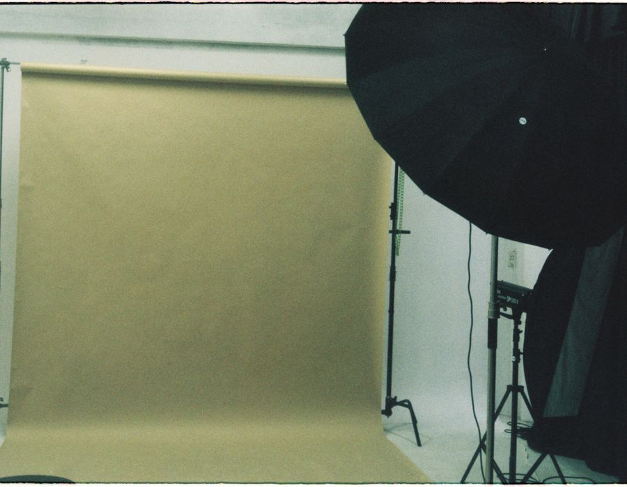

Espace 01
Le studio classique
Notre espace de prise de vue quotidien, ouvert à tous et sans rendez-vous : portraits, photos de famille, photos de groupe et pièces d’identité.
- Fond automatique et fond manuel
- Portraits, familles et groupes
- Photo d’identité remise sur place
- Séances rapides, sans rendez-vous